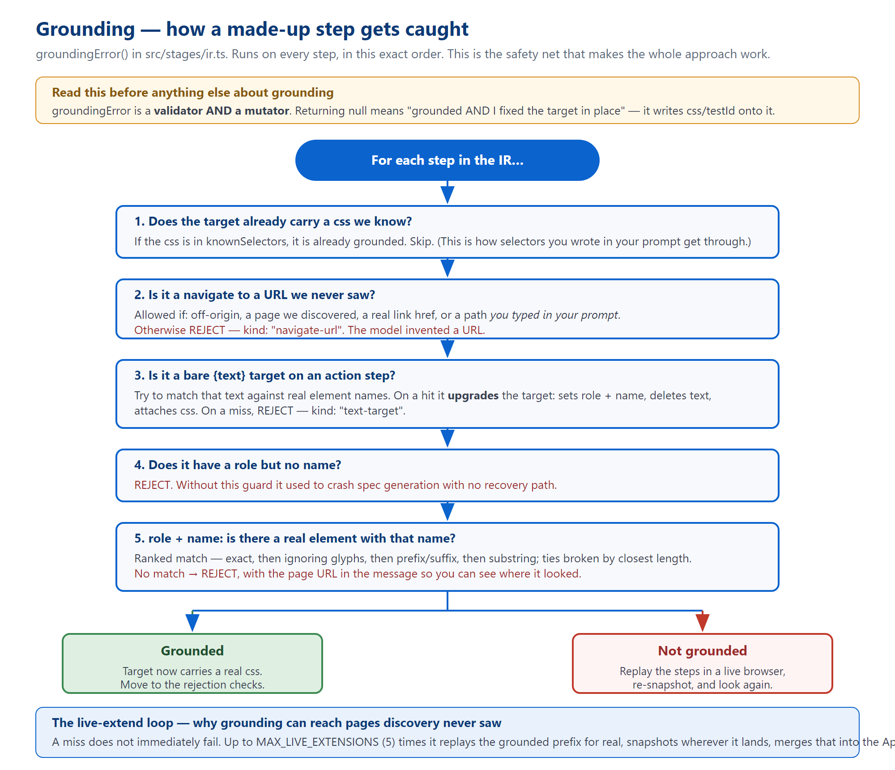
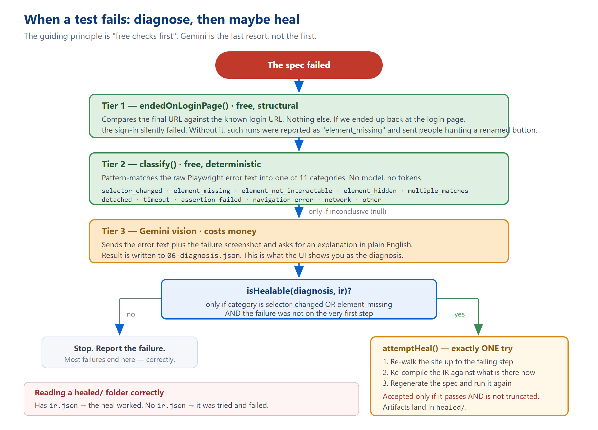

How a sentence becomes a test that has already run
src/orchestrator.ts, all 22 files in src/stages/, the three schemas in src/schema/, the five files in src/llm/, and the three in src/kb/ — about 11,000 lines in total.
ARCHITECTURE.md still owns the formal file map, DECISIONS.md the reasoning, TECH_DEBT.md the defect list.
[[TOC]]
Before any individual file, get this distinction straight. It is the most common source of confusion when reading this directory.
| Tier | What it means | Files |
|---|---|---|
| Main path | Stages the orchestrator calls directly, in order. | planner, hybridDiscovery, testCases, ir, generator, executor, failureAnalysis, heal, suiteRunner |
| Internals | Called by a main-path stage, but the orchestrator never imports them. | discovery, domDiscovery, domExtract, targetResolver, promptSelectors, authSettle, liveExtend, classify, credentials |
| Off-path | Driven by the HTTP server, not by runPipeline() at all. | stepText, caseEdit, replay, and caseSelectionGate (a conditional dynamic import) |
src/stages/discovery.ts is not the discovery stage. There is no discover() function in it. It holds helpers for the vision fallback path. The real discovery entry point is hybridDiscovery.ts, which replaced it.
src/orchestrator.ts — 437 lines
One function runs the whole pipeline. If you read one file in this repository, read this one: it calls everything else in order, and every other file makes more sense afterwards.
export async function runPipeline(
{ prompt, url, urls, coverage, options },
onEvent = () => {},
presetRunId?,
askCredentials?
): Promise<{ runId, runDir, result, diagnosis }>
const save = (name, data) =>
writeFileSync(path.join(runDir, name), JSON.stringify(data, null, 2));
async function step<T>(stage, filename, fn): Promise<T> {
emit(stage, "started");
try {
const result = await fn();
if (filename) save(filename, result);
emit(stage, "completed", result);
return result;
} catch (err) {
emit(stage, "failed", undefined, err?.message);
throw err;
}
}
Every numbered artifact you find in runs/ was written by that one save call. Every event the UI renders came from that one emit. Seven step() calls make up the pipeline:
| Line | Stage | Artifact | Function called |
|---|---|---|---|
| 122 | plan | 01-plan.json | plan(prompt, url, coverage) |
| 152 | discovery | 02-appmodel.json | discoverSiteHybrid() or discoverPagesHybrid() |
| 171 | testcases | 03-cases.json | toTestCases() or runCaseSelectionGate() |
| 231 | ir | 04-ir.json | toIR(primary, appModel, prompt, entryUrl, budget, creds) |
| 238 | generate | null | generateSpec(ir, stepShots) |
| 245 | execute | 05-result.json | runSpec(spec, runDir, credentialEnvVars(creds)) |
| 263 | failure_analysis | 06-diagnosis.json | analyzeFailure(ir, result, loginUrl) |
credentials is not positional. It can fire inside the discovery step, and again after testcases. The guard against asking twice is simply !runCreds — if discovery got credentials, the second ask is skipped.testcases emits completed twice, with two different payload shapes: once for the generated batch, once after the final scoped list is settled.03-cases.json and 05-result.json are each written twice on some paths. The last write wins.blocked overrides passed in the done event but does not rewrite 05-result.json — so the file and the UI can legitimately disagree.store.append(event) runs before onEvent(event), so a crash inside the callback still leaves the event recorded.gateUsed = gateRequested && !!askCredentials. The CLI (src/cli.ts, 42 lines) does not pass an askCredentials callback, so it can neither prompt for credentials nor open the gate — regardless of what ENABLE_CASE_SELECTION_GATE says. That is intentional: there is nobody to answer.
src/stages/planner.ts — 71 lines
Turns your sentence into an ordered list of intentions.
export async function plan(prompt: string, url: string, coverage: Coverage = "standard"): Promise<Plan>
export const Plan = z.object({
goal: z.string(),
steps: z.array(z.string()).min(1),
testTypeScope: z.array(z.string()).default(ALL_SCOPES),
coverage: z.enum([...]).default("standard"),
});
testTypeScope and coverage are overwritten — scope comes from classifyScope(prompt), a plain keyword heuristic, and coverage comes from what you selected in the UI. The model's opinion on those two is discarded.
Two attempts, then it throws. The result is cached on disk under a key that includes the prompt, URL, coverage, scope, model name and the system prompt itself — see §14 for why that last one matters enormously.
Four files cooperate here. This is where the platform earns its reliability, so it is worth understanding properly.
<div> styled as a button, whether an element is really visible) cannot be known from an HTML string.src/stages/hybridDiscovery.ts — 1,023 lines
The real entry point, and the only discovery module the orchestrator imports.
export async function discoverSiteHybrid(url, creds?, askCredentials?): Promise<AppModel>
export async function discoverPagesHybrid(urls: string[]): Promise<AppModel>
export async function discoverHybrid(url: string): Promise<AppModel>
export async function hasLoginGate(page: Page): Promise<boolean>
export async function loginOnPage(page: Page, creds: Credentials): Promise<AuthStep[] | null>
export async function verifySession(page: Page, loginUrl: string): Promise<boolean>
export function isAllowedEntryUrl(urlStr: string): { ok: boolean; reason?: string }
export const MAX_DISCOVERY_PAGES = Number(process.env.MAX_DISCOVERY_PAGES ?? 5)
verifySession.BrowserContext. sessionStorage is scoped to the tab, not the context — so a second page on the same authenticated context comes back logged out and modelling the login screen. This was verified directly. Any site whose session lives in sessionStorage (a mainstream React/Vite pattern) breaks the moment someone "tidies" this into a page-per-URL loop.
login-failed result is never cached. Caching one pinned the run to a broken login for the whole cache TTL.
const-assigned inner functions inside a page.evaluate callback. The server runs through tsx, which uses esbuild, which wraps every named function in a __name(...) call to preserve .name. That helper does not exist inside the browser. Vitest's transform does not inject it — so this passes every unit test and throws ReferenceError: __name is not defined only on a real npm run serve. Write those callbacks fully inlined, duplicating code across branches if you must, and leave a comment saying why.
Page order in the resulting model is [entry, loginPage] — the authenticated page first, the login page last, because every downstream truncation drops from the end.
src/stages/domExtract.ts — 708 lines
Pure cheerio: HTML string in, structured CrawlResponse out. No network, no browser, completely deterministic. It has exactly one export:
export function extractCrawlResponse(html: string, url: string, statusCode: number): CrawlResponse
Everything else — forms, links, buttons, navigation, tables, images, accessibility, UI-pattern detection — is private to the file.
proximityLabelPlenty of real forms look like this, with no <label> at all:
<div>Full Name</div> <input type="text">
Without help that field has no name and is unaddressable. proximityLabel looks at the previous sibling, then the wrapper's previous sibling — deliberately shallow, capped at 60 characters, and it skips a preceding form control (that is a sibling field, not a label). It only runs when the field has no placeholder and no aria-label, because otherwise the same control was emitted twice under two different names.
value forced to "". A live anti-csrftoken once reached 02-appmodel.json and events.ndjson — both of which are served publicly. See TECH_DEBT.md TD-64.
src/stages/domDiscovery.ts — 581 lines
export async function extractDomModelFromPage(page: Page, url: string): Promise<AppModel | null> export async function discoverUsingCrawler(url: string): Promise<AppModel | null> export function needsVisionFallback(appModel: AppModel): boolean
Note the return type: AppModel | null. These functions never throw, so the caller can always fall back to vision.
Finding zero elements is ambiguous: it could be an auth wall, or a single-page app that has not finished rendering. So the code re-reads the page every second for up to DISCOVERY_HYDRATION_POLL_MS (default 6,000 ms). The measurement that motivated it, on a real page — recorded in TECH_DEBT.md TD-31; re-check before quoting:
| Time after load | Elements found |
|---|---|
| +800 ms | 0 |
| +2.8 s | 347 |
| +4 s | 576 (stable) |
Before this, an SPA was routinely modelled as an empty page and cached that way.
name attribute last. An earlier version preferred the name attribute and produced "user-name" on a well-known demo site, which no locator could ever match.
src/stages/discovery.ts — 367 lines
Helpers for the vision fallback, plus the in-page interactive-element scanner. Key exports: detectInteractiveElements(page), attachElementIdentity(model, detected), modelFromAria(url, title, aria, screenshotBase64?).
Two details worth carrying:
offsetParent. offsetParent is null for position: fixed, which silently excluded every fixed header — exactly where cart and search buttons live.attachElementIdentity only attaches a selector when a role+name pair matches exactly one element. Six "Add to cart" buttons each need their own selector; attaching the first one to all six would make every click add the same product.src/stages/testCases.ts — 533 lines
export async function toTestCases(p: Plan, appModel: AppModel, extend?, opts?): Promise<TestCase[]> export function finalizeCaseSelection(allCases, scope, coverage, gateUsed, loginUrl?): TestCase[] export function selectCases(all, budget, loginUrl?): TestCase[] export function filterNovelCases(all, seenTitles): TestCase[] export const budgetFor = (coverage: Coverage): number
selectCases — four filters, in this orderMAX_LOGIN_CASES (default 1) cases targeting the login page itself.pageKey(targetUrl) === pageKey(loginUrl), not on a regex over the title. Without the cap, a suite about a shop tests the login form five times and never reaches the shop.
finalizeCaseSelection skips selectCases entirely when the gate was used. If a human explicitly picked which cases to run, silently re-applying a budget over that decision would override them in both directions. A person's choice wins.
CATEGORY_IDS = ["valid", "invalid-input", "empty-boundary", "state-change",
"security-injection", "security-xss", "functional-other"]
The model's free-text category is coerced into one of these by normalizeCategory inside a Zod preprocess. Free-form categories were the shared root cause of three separate bugs: credential substitution overwriting an attack payload, security cases surviving a functional-only run, and duplicate detection having nothing to group on.
src/stages/caseSelectionGate.ts — 279 lines
The optional human review loop: generate a batch, park the run, regenerate if you are not satisfied. Loaded by dynamic import only when enabled.
It writes no numbered artifact. Instead it appends events with an action field — case_round_requested, case_round_resolved, case_regen_limit_reached, case_selection_finalized. If you are debugging the gate, that is where to look.
src/stages/ir.ts — 1,818 lines, the largest file in the project
This file compiles one test case into strict JSON and then proves, step by step, that every element it mentions actually exists. Almost every hard-won lesson in this codebase is encoded somewhere in here.
export async function toIR(testCase, appModel, sourcePrompt, entryUrl, budget?, runCreds?): Promise<IRResult>
export interface IRResult { ir: IR; updatedAppModel: AppModel }
export function groundingError(ir, appModel): { index, message, kind? } | null
export function vacuousAssertion(ir, appModel?): { stepIds, message } | null
export function urlAssertionError(ir, appModel): { index, message } | null
export function assertionContradictsCase(ir, testCase): { stepIds, message } | null
export function clickedElementHiddenAssertion(ir, appModel, testCase): {...} | null
export function crossFormBleedError(ir, appModel): { stepIds, message } | null
export function missingActions(ir, testCase): { message } | null
export function buildLoginPrefix(auth): Step[]
export function needsLoginPrefix(testCase, auth): boolean
Up to MAX_IR_ATTEMPTS (default 4) times:
temperature: 0.2.IR schema.
Figure 1 — the five checks inside groundingError(), in the order they run.
groundingError: it is a mutator, not just a validator.
null does not only mean "this IR is fine". It means "this IR is fine and I have corrected it in place" — it rewrites role and name to the real values and attaches the real css and testId to the target.
caseEdit.ts deep-copies every target before calling it. If you call this function on data you did not intend to modify, you will modify it.
Discovery crawls at most five pages, and it cannot click through a checkout flow. So grounding will legitimately fail on steps that point at pages further in. Rather than give up, the code does this:
Up to MAX_LIVE_EXTENSIONS (default 5) times. This is why the IR stage is the slowest and most expensive part of a run: it can drive a real browser several times.
| Check | Catches |
|---|---|
vacuousAssertion | An assertion that cannot fail — e.g. url_contains "/". |
urlAssertionError | A URL assertion pointing somewhere the flow never goes. |
clickedElementHiddenAssertion | Asserting an element is hidden when the test just clicked it. |
crossFormBleedError | Filling fields from two different forms as if they were one. |
missingActions | An IR with far fewer actions than the case described. |
postClickRevealIndex | Content that only appears after a click. Costs a browser launch — deliberately last, and runs at most once per toIR. |
assertionContradictsCase | An assertion that contradicts the case's own stated expectation. |
missingActions works by running a regular expression over prose written by the model — case titles and step text. That is not deterministic; it inherits whatever the model happened to say. It once rejected a perfectly correct IR because the page's own heading contained the word "Click".
TECH_DEBT.md TD-01: when you write a new guard, check structure — a role, a discovered element, a schema field — not text.
Rather than fail outright, the compiler degrades in a defined order:
meta.truncated and meta.truncationNote.meta.truncated before believing a green result.
trackPages goes stale. It follows which page each step is on, but after a click it cannot follow, it reports null. Leaving the cursor parked on the last known page truncated a real admin flow, because every post-login step was being grounded against /login.
Prompt size is capped at 30,000 characters. When over, it drops the least relevant pages one at a time, then cuts the model JSON — and it pretty-prints that JSON purely so the cut has a line break to land on. It never cuts the assembled prompt, which used to shear the instructions off the end.
src/stages/generator.ts — 589 lines
export function generateSpec(ir: IR, screenshotDir = "artifacts"): string
One export. No LLM, by explicit design (DECISIONS.md D-06) — the output must be deterministic, reviewable and reproducible.
The emitted file contains: helper functions (spliced in only if used), header comments naming the feature and priority, an afterEach that dumps the final page text, and then one await test.step(...) per IR step, each followed by a screenshot.
"networkidle" is replaced with "domcontentloaded" in the final string. A blanket .replace() on the way out, because networkidle hangs forever on real sites with analytics or polling.
An empty comparison value throws rather than emitting. Emitting toHaveURL(new RegExp("")) would match anything and pass — a false pass is worse than a hard failure.
.filter({ visible: true }) incident — the reason a rule exists. A fix shipped using .filter({ visible: true }). It type-checked. It passed a unit test. It was a silent no-op, because Locator.filter() has no visible option in this project's pinned Playwright version — the option is ignored, not rejected.
.and(page.locator(':visible')), and it must come before any trailing .first().
DECISIONS.md D-19.
The screenshot helper waits for real content and for one observed change. Two identical blank frames used to satisfy the "page has settled" rule, which is how step-1.png came out blank in 23 of 38 saved runs at the time — at a constant 4,331 bytes every time. (Counts from the screenshot forensics recorded in TECH_DEBT.md; the ratio was a snapshot, not a constant.)
src/stages/executor.ts — 346 lines
export async function runSpec(specCode, runDir, secretEnv = {}): Promise<ExecResult>
export function scrubServedSecrets(raw, artifactsDir, resultsJson, errorContextFiles, secretEnv): any
export function detectBlocked(artifactsDir, appOrigin?): BlockedInfo | null
export function findScreenshot(dir: string): string | null
export function findVideo(dir: string): string | null
It spawns Playwright as a child process rather than importing it:
spawn(process.execPath, [
cliPath, "test", specPath, "--reporter=json", `--output=${artifactsDir}`
], { env: { ...process.env, ...secretEnv, PLAYWRIGHT_JSON_OUTPUT_NAME: resultsJson } })
if (result.passed || result.raw) return result — a parsed report is the verdict, pass or fail. An earlier version checked exitCode === 1, which never retried anything real (Playwright exits 1 for any failure) while re-running genuine assertion failures, doubling cost and disguising real defects as flakiness.
The live page is contaminated even when the files are not — a password may be typed into a field and appear in an error message. So after the run, scrubServedSecrets rewrites results.json, artifacts/final-page.txt, and every Playwright error-context attachment.
password turned inputType: "password" into "[redacted]" and css: "#password" into "#[redacted]" — eight structural replacements, and the generator then emitted a selector matching nothing. Values shorter than four characters are skipped for the same reason.

Figure 2 — three tiers of diagnosis, then at most one repair attempt.
src/stages/classify.ts — 167 lines
Deterministic, zero-token classification from the error text alone. Returns null when inconclusive, which is the signal to escalate.
KNOWN_CATEGORIES = ["selector_changed", "element_missing", "element_not_interactable",
"element_hidden", "multiple_matches", "detached", "timeout",
"assertion_failed", "navigation_error", "network", "other"]
"toBeVisible() failed" and "Timed out Nms waiting for expect(...)". Only the first was matched, so real visibility timeouts fell through to Gemini and came back misdiagnosed.
resolved to 0 versus resolved to [1-9] is what separates element missing from timeout. A single /resolved to/ pattern matched both, which made element_missing unreachable — and therefore made the entire self-heal path dead code.
src/stages/failureAnalysis.ts — 289 lines
Three tiers, in order: endedOnLoginPage (structural — did we bounce back to the login page?), then classify, then Gemini vision with the failure screenshot attached.
verifiedText is kept as a separate field from explanation, deliberately: "the model's guess" and "confirmed against the captured DOM" must stay visibly distinct.
src/stages/heal.ts — 98 lines
export function isHealable(diagnosis: Diagnosis, ir: IR): boolean export async function attemptHeal(args: HealArgs): Promise<HealResult | null>
Healable means: the category is selector_changed or element_missing, and the failure was not on the very first step. Exactly one attempt, ever.
if (healedIr.meta.truncated) return null — running only a prefix would "pass" without exercising the thing that broke.
runSpec runs before the if (!healedRun.passed) return null guard, and both writeFileSync calls come after it.
healed/artifacts/, healed/results.json and healed/generated/test.spec.ts — with no healed/ir.json. That absence is how you tell the two apart. (Note also that this one file is ir.json, not 04-ir.json — the only artifact in the tree that breaks the numbering convention.)
src/stages/suiteRunner.ts — 384 lines
Takes every selected case through the same compile-generate-execute cycle into cases/case-N/, reusing the primary's already-executed result rather than running it twice.
tc === primaryResult.testCase), not by the fromPrompt flag. Reactive case generation can produce a second flagged case, and matching on the flag grafted the primary's result onto both of them.
Status precedence: blocked → truncated_no_assertion → truncated → passed/failed.
05-result.json. The field is literally passed: status === "passed" || status === "truncated". The richer status lives in 07-suite-summary.json. If you are counting passes from the wrong file you will overcount.
src/stages/targetResolver.ts — 168 lines
The single definition of "IR Target → Playwright locator", in two forms: resolveCode() returns a string for the generator; resolveLive() returns a real Locator for replay.
Precedence: css → field helper → role + name → the fallback ladder (label, placeholder, text, testId).
resolveRoleWithFallback here and LOCATE_HELPER in generator.ts are the same algorithm written twice, deliberately (the generated spec must be self-contained). Nothing pins them equal, and they have already drifted once. See TECH_DEBT.md TD-07.
src/stages/liveExtend.ts — 453 lines
Replays a grounded step prefix in a real browser and merges a fresh snapshot back into the AppModel. Never mutates — always returns a new model.
extendAppModel throws if the page it reaches is already in the model. That is what routes the IR stage into refreshPageModel instead of looping forever.assert steps during replay — assertions observe state, they do not advance it.src/stages/credentials.ts — 631 lines
Everything about credentials: which field wants which kind, whether a given case may receive real ones, and how they stay off disk.
credentialPolicyFor returns "full", "identifier-only" or "none", and defaults to none.
' OR '1'='1 payload silently overwritten with the user's real email address, because nothing in the blocklist matched it. The case then tested nothing at all.
fromPrompt used to be evaluated first and short-circuit. That meant "log in with invalid credentials" received working credentials, logged in successfully, and then failed its own assertion.
Only the last fill of each kind is substituted. One case can legitimately register an account and then log in with it; blanket substitution breaks that.
src/stages/authSettle.ts — 49 lines
The shared "is this an auth submit, and has it landed" vocabulary. Two phases: wait up to 3 s for a URL change, then up to 4 s for network idle. Never throws — on timeout it simply proceeds, so the caller's normal retry path still applies.
src/stages/promptSelectors.ts — 98 lines
Extracts CSS selectors you wrote in your own prompt, verifies them against the discovered model, and renders them as a permitted exception. This is the only sanctioned way a CSS selector enters an IR from text rather than from grounding.
Unknown selectors are dropped with a log line: [ir] ignoring selector(s) from the request. If a user says "my selector didn't work", check that log.
src/schema/appModel.ts — 571 lines
Defines AppModel and every projection of it used to build a prompt: toLiteModel (for case generation), toMicroModel (for IR — one page, 30 elements max), toElementIndex (for the gate's editor).
textbox "hLJv+ZAi/…".
visible === false alone is not enough: on a real run, 55 hidden inputs got through while only 30 elements carried that flag. And promptFormFields filters before slicing, because slicing first spent the cap on unusable entries and carried their values out of the process — 48 of 54 hidden fields had non-empty values. (Both counts are from TECH_DEBT.md TD-64, measured on one run; treat them as illustrative rather than current.)
src/schema/ir.ts — 70 lines
Small file, big importance — this is what the generator and executor consume. See Figure 4 in Volume 1 for the shape.
url_contains, title_contains, title_equals. They are page-level, and their comparison value lives in step.value.
text_contains against the body — searching the rendered page for a string that only exists in <title>. Reproduced against a real site whose title appears zero times in its body text.
src/schema/caseSelection.ts — 86 lines
The wire contract for the review gate's decision. Note that GateCaseAddSchema deliberately does not accept fromPrompt or generatedFrom — those are routing state the pipeline stamps itself, and letting a client set them would let a request reclassify what the run thinks it is doing.
| File | Lines | Job |
|---|---|---|
llm/gemini.ts | 99 | The single HTTP call to Gemini, wrapped in key rotation and spend accounting. |
llm/backoff.ts | 149 | Retry, exponential backoff, per-attempt timeout, key cooldown. |
llm/keyPool.ts | 40 | Round-robin over several API keys, with per-key cooldown. |
llm/llmBudget.ts | 139 | The per-run hard cap on model calls, and the ambient-context plumbing. |
llm/json.ts | 9 | Strip code fences and leading prose, parse the first JSON value. |
The key pool is built lazily, on first use. At module scope, a missing key made merely importing anything downstream throw — so pure functions in ir.ts and generator.ts could not be unit-tested without live credentials.
totalTokens is read from the API, not summed. Gemini's own total includes thoughtsTokenCount; adding prompt and completion tokens would undercount spend on any reasoning model.
There is no default temperature. Unlike the retired Groq client, GeminiOpts has none — which is exactly why ir.ts sets temperature: 0.2 explicitly. Omit it elsewhere and you silently get Gemini's default.
backoff.ts.
NaN, because setTimeout(cb, NaN) fires immediately — aborting every request instantly, which is strictly worse than the hang it was meant to fix.
err.name. An aborted fetch can surface as TypeError: terminated if the abort lands mid-body-read.
Network and timeout failures do not penalise the key. They are not the key's fault, and penalising would needlessly shrink the rotation pool.
The budget must be one per run, never a module singleton — MAX_CONCURRENT_RUNS lets several runs share one Node process. A failed call is still recorded, because the request was already spent.
src/kb/testStrategy.ts — 198 lines
A hand-written QA checklist keyed by concept, plus the closed category list and the scope classifier. It covers six concepts (login, signup, search, checkout, cart, contact) with a generic floor for everything else — unmatchedConcepts exists to tell the model where the checklist has nothing to offer.
normalizeCategory: the string "invalid" contains "valid", so negative families must be tested first.
\b(functional|functionalit)\b could never match "functionality", because the trailing "y" blocks the word boundary. So "test the login functionality" classified as both scopes and produced SQL-injection cases nobody asked for. It now matches on stems.
src/kb/llmCache.ts — 42 lines · src/kb/cache.ts — 38 lines
runs/_cache/llm/ lives forever.
DECISIONS.md D-10.
The AppModel cache (kb/cache.ts) does expire, against file mtime, default 30 minutes. Setting APPMODEL_CACHE_TTL_MS=0 disables it entirely — which is what you want while iterating against a site you are actively editing. It uses three distinct key namespaces (bare URL, dom:, site:…#auth=); sharing one would let either function hand back the other's differently-shaped result.
These three are driven by the HTTP server, not by runPipeline(). Volume 3 covers the routes; here is what the stage code does.
src/stages/stepText.ts — 450 lines
The one mapping between IR steps and plain English, plus the arithmetic that decides what an edit will cost.
css, testId, nth, label, placeholder or preAction. So parse(format(step)) cannot reproduce a grounded step on its own.
parseIrStep(formatIrStep(step), step) — parsing onto the original. An untouched line returns the base object byte-identical. A changed line clears the grounded fields precisely because they describe the element the user just stopped pointing at, forcing a re-ground.
The split that matters for cost: changedIndexes mints a new version and is free. regroundIndexes is the only thing that costs money — retyping a password is free; changing which box it types into needs a browser.
src/stages/caseEdit.ts — 247 lines · src/stages/replay.ts — 211 lines
caseEdit re-grounds an edited case against the live site. If regroundIndexes is empty it does zero browser work — instant and free. It calls only refreshPageModel and groundingError; reimplementing either would be TD-07 happening a third time. It deep-copies targets first, because groundingError mutates.
replay is a second entry point into the pipeline that starts from a stored IR: zero LLM calls. It writes 08-llm-usage.json with literal zeroes as on-disk proof.
skipped note. The frontend maps stages onto four progress cards and only marks a card complete when every stage it tracks completed — emitting only generate and execute would leave the first two cards pending forever and the run would look hung.
| Symptom | Cause | Where |
|---|---|---|
04-ir.json will not parse as an IR | Run-level file is a wrapper; only the per-case one is bare. | orchestrator.ts:231 |
| A prompt change has no effect | The LLM disk cache never expires. The system prompt must be in the key. | kb/llmCache.ts |
| Discovery returns only a login page | Credentials never reached discovery, or the gate was not detected. | hybridDiscovery.ts |
ReferenceError: __name is not defined, but tests pass | A named function inside a page.evaluate callback. | hybridDiscovery.ts:548 |
| Test passes but verified nothing | Truncated IR with no terminal assertion, or a vacuous assertion. | ir.ts |
| Generated locator matches nothing | The element's name was proximity-inferred; only css can reach it. | appModel.ts |
| Credentials silently ignored | Policy returned none, or the field was not the last fill of its kind. | credentials.ts |
| The gate never fires from the CLI | gateUsed requires an askCredentials callback. | orchestrator.ts:170 |
healed/ exists but has no ir.json | The heal ran, failed, and returned before the writes. | heal.ts:92 |
| A guard rejects a correct IR | It regexes prose rather than checking structure — the TD-01 pattern. | ir.ts |